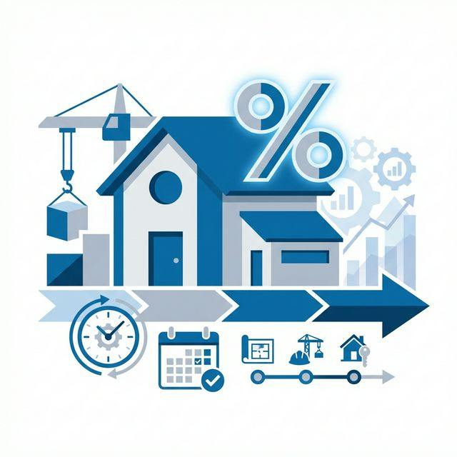
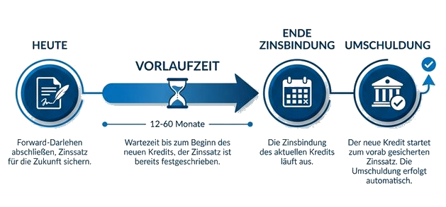

Baufinanzierung & Forward-Darlehen
Sichern Sie sich die Zinsen von heute für Ihre Anschlussfinanzierung von morgen. Planungssicherheit für Ihr Eigenheim – bis zu 60 Monate im Voraus.

Was ist ein Forward-Darlehen?
Zinsen sichern für die Zukunft
Ein Forward-Darlehen ist eine spezielle Form der Anschlussfinanzierung, mit der Sie sich die aktuellen Zinsen für einen Zeitpunkt in der Zukunft sichern können. Es eignet sich ideal für Immobilienbesitzer, deren Zinsbindung in den nächsten 12 bis 60 Monaten ausläuft.
Sie schließen den Vertrag bereits heute ab, das Darlehen wird aber erst zum Ende Ihrer aktuellen Zinsbindung ausgezahlt. So machen Sie sich unabhängig von künftigen Zinssteigerungen.
💡 Wie es funktioniert
Das Wort "Forward" bedeutet "Vorwärts". Sie kaufen sich heute das Recht, zu den aktuellen Konditionen in der Zukunft (bis zu 5 Jahre im Voraus) finanzieren zu dürfen. Dafür zahlen Sie meist einen geringen Zinsaufschlag.

Ihre Vorteile beim Forward-Darlehen
Zinssicherheit
Sichern Sie sich das aktuelle Zinsniveau für Ihre Anschlussfinanzierung. Steigende Zinsen in den nächsten Jahren können Ihnen dann egal sein.
Planungssicherheit
Sie wissen heute schon genau, wie hoch Ihre monatliche Rate in 1, 2 oder 5 Jahren sein wird. Das schafft Ruhe und Sicherheit für Ihre Finanzplanung.
Keine Bereitstellungszinsen
Für die Zeit bis zur Auszahlung (die sogenannte Forward-Periode) fallen in der Regel keine Bereitstellungszinsen an.
Wann lohnt sich ein Forward-Darlehen?
-
Erwartung steigender Zinsen
Wenn Sie davon ausgehen, dass die Bauzinsen in den nächsten Jahren steigen werden, ist ein Forward-Darlehen die perfekte Absicherung.
-
Auslaufende Zinsbindung
Ihre aktuelle Zinsbindung endet in 12 bis 60 Monaten? Dann sollten Sie jetzt aktiv werden und Konditionen vergleichen.
⚠️ Wichtig zu beachten
Ein Forward-Darlehen ist verbindlich. Wenn die Zinsen wider Erwarten sinken, müssen Sie das Darlehen trotzdem zu den vereinbarten Konditionen abnehmen (oder eine Nichtabnahmeentschädigung zahlen).
So sparen Sie mit einem Forward-Darlehen
Sehen Sie selbst, wie attraktiv ein Forward-Darlehen für Sie sein kann:
Aktuelle Baufinanzierung
Zinssatz: 4,30%
ursprüngliche Darlehensgröße: 200.000 €
Zinsfestschreibung bis 31.05.2027
Darlehensende: 31.07.2060*
Monatliche Rate
850 €
Aktuelle Alternative
Zinssatz: 3,44%
Restschuld zum 31.05.2027: 180.257 €
Zinsfestschreibung bis 31.05.2037
Darlehensende: 31.07.2060*
Monatliche Rate
759 €
Ihre Ersparnis
Bei Wechsel zum empfohlenen Tarif
Monatliche Ersparnis
91 €
*bei angenommen gleichbleibendem Zinssatz
Häufige Fragen zum Forward-Darlehen
In der Regel können Sie ein Forward-Darlehen bis zu 60 Monate (5 Jahre) vor Ablauf Ihrer aktuellen Zinsbindung abschließen. Je weiter der Auszahlungstermin in der Zukunft liegt, desto höher ist meist der Zinsaufschlag.
Die Kosten bestehen hauptsächlich aus dem Forward-Aufschlag auf den aktuellen Marktzins. Dieser Aufschlag beträgt oft ca. 0,01% bis 0,03% pro Monat der Vorlaufzeit.
Beispiel: Bei 24 Monaten Vorlaufzeit könnte der Zins z.B. um 0,5% höher liegen als bei einem Sofort-Darlehen. Dafür haben Sie aber die Sicherheit gegen stark steigende Zinsen.
Ja, absolut. Ein Forward-Darlehen ist eine hervorragende Gelegenheit, die Bank zu wechseln. Oft bieten neue Banken attraktive Neukundenkonditionen für die Anschlussfinanzierung an.
Das Forward-Darlehen ist verbindlich. Sinken die Zinsen bis zum Auszahlungstermin unter Ihren gesicherten Zinssatz, müssen Sie das Darlehen trotzdem abnehmen. Es handelt sich also um eine Wette auf steigende oder gleichbleibende Zinsen.
Ein Forward-Darlehen ist grundsätzlich bindend. Eine vorzeitige Kündigung ist nur in seltenen Ausnahmefällen möglich und führt in der Regel zu einer Vorfälligkeitsentschädigung.
Wichtige Ausnahme: Bei einem berechtigten Interesse (z.B. Verkauf der Immobilie, Tod, Scheidung) können Sie unter Umständen vom Vertrag zurücktreten. Die Bank berechnet dann aber meist den entgangenen Gewinn als Entschädigung.
Tipp: Prüfen Sie die Vertragsbedingungen genau und klären Sie Kündigungsmodalitäten vor Vertragsabschluss!
Ja. Bei Abschluss des Forward-Darlehens führt die Bank eine Bonitätsprüfung durch – genau wie bei einem normalen Darlehen.
Geprüft werden:
- Ihre aktuelle Einkommenssituation
- Ihre SCHUFA-Auskunft
- Der Wert der Immobilie (Beleihungswert)
- Bestehende Verbindlichkeiten
Vorteil: Sie wissen bereits heute, ob Sie die Finanzierung bekommen. Es gibt keine bösen Überraschungen kurz vor Ablauf Ihrer Zinsbindung.